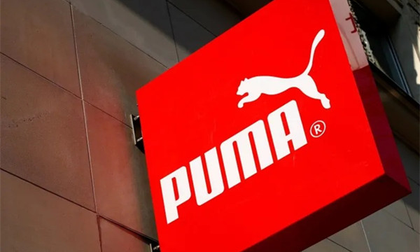
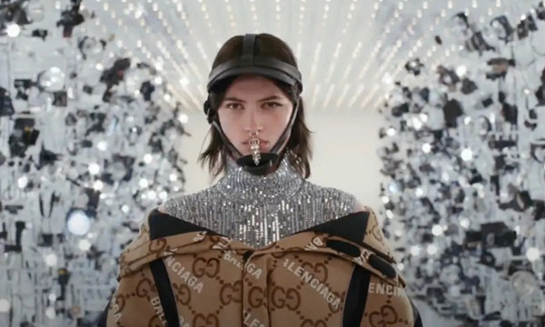
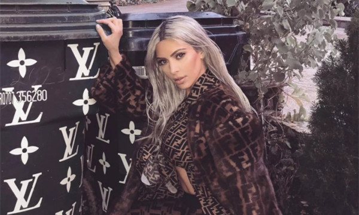

Sales at Gucci, which accounts for nearly 60% of the group's results, rose 4.5% to 2.181 billion euros in the reporting period. Direct retail revenue rose 7%, also up 2% from the same period in 2019. First-nine months revenue jumped more than 29% to 6.66 billion euros, and comparable sales jumped more than 31%.
The Epilogue concludes Alessandro Michele's on-going investigation into fashion rituals. The three-part series began with The Ritual Show and campaign for A/W 20, where guests to the show in Milan were, to their surprise, led through backstage preparations. Opening up what is typically left unseen for the audience is a thread which has continued to run throughout the narratives Michele weaves.
If the The Epilogue campaign looks familiar, that's because it is. In lieu of a runway show in July, Michele live-streamed the making of the campaign from Rome’s Palazzo Sacchetti over twelve hours. Opening up the closed walls of fashion and challenging how a show is presented, now the final product is released. Now also including new footage filmed in the graffiti-covered Campo Boario area, comes a campaign film directed by Damiano D'Innocenzo and Fabio D'Innocenzo alongside a series of images by Minneapolis-based photographer Alec Soth.
Michele says of the campaign: 'I brought together different things, which represent the messy beauty that I have always sought: the chaos of beauty. What happens to the relation between reality and fiction when prying eyes sneak into the mechanisms of the production of an image? What happens to fashion, when the true goes back to being just a moment of the false? Breaking the spell that forces my collaborators to passionately work on clothes they later have to abandon, I asked the team to wear them. And so we did a self-sufficient job, all inside our house, mixing things we had already done with things we were about to – overcoming the schemes of the time coherently with my idea of The Epilogue, the final resolution of a future that is largely present.'
In this website you could research any fashion news you want!



Life is getting better